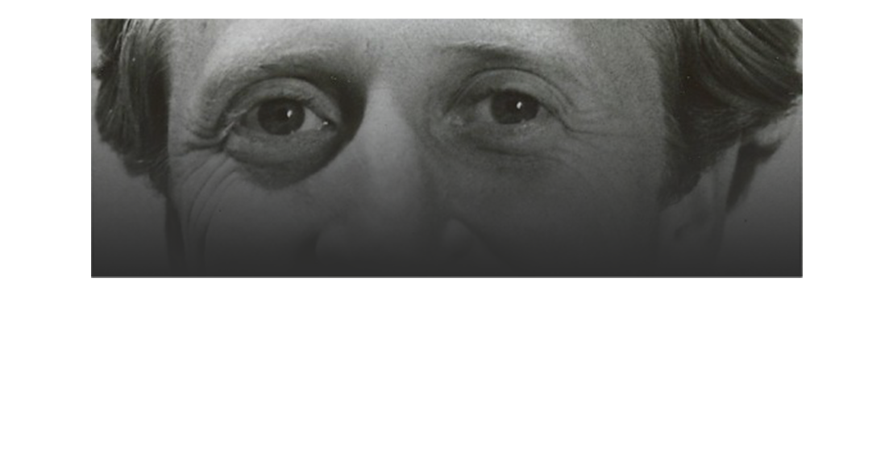
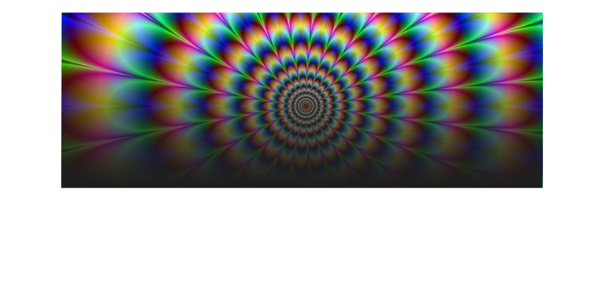
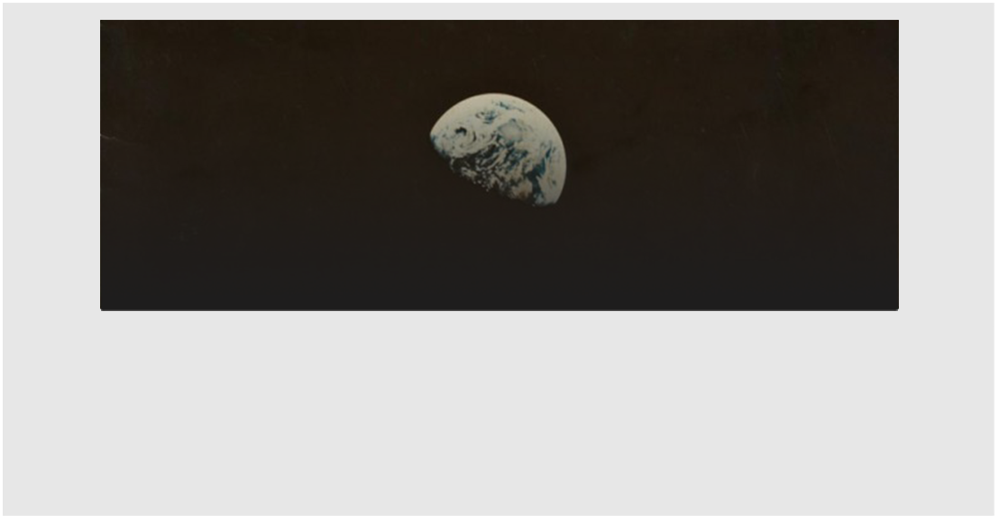
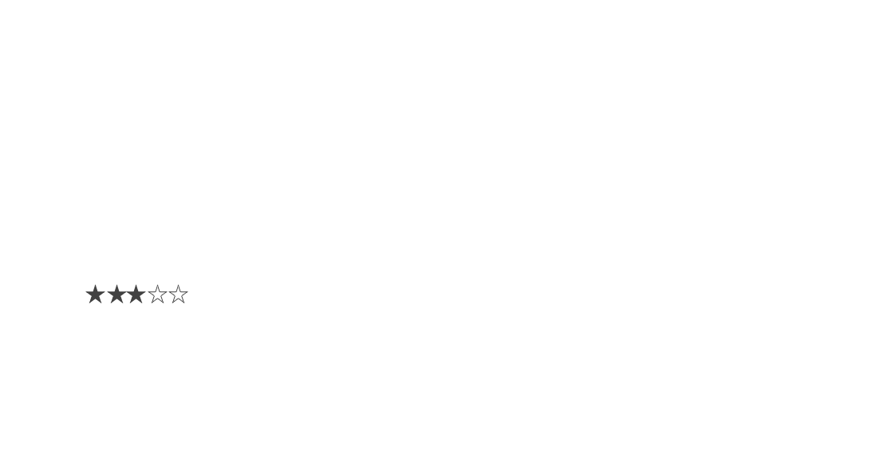

Pages

STEWART BRAND
Stewart Brand c’est mon héro. C’est l’inventeur du Whole Earth Catalog,
l’organisateur des happenings les plus oufs, et il a même créé le WELL
(même si bon du coup c’est pas trop ce qu’on croyait haha. Mais bref ce
mec il a permi tellement de trucs. C’est grâce à lui qui internet est ce
qu’il est. Il a tjrs été là où il fallait.

#TEAMLSD
C’est une page assez cool mais bon le LSD c’est plus ce que c’était :/

WHOLE EARTH CATALOG
Ptit magasine super pratique. J’avoue qu’au début j’étais un peu dubitative
mais en fait c’est super pratique. Des ptits DIY artisanat, des recettes...
On y trouve un peu tout ce qu’on veut en fait. Je recommande


WHOLE EARTH 'LECTRONIC LINK

Le WELL a voulu essayer de réaliser ce monde utopique dont on rêvait.
Et ça le fait plutôt bien! Quand on est en ligne, y’a plus de status sociaux,
tout le monde est différent et veut découvrir le monde des autres. Mais
avec le Well Office Party on a vu que c’était pas vraiment le cas...
Mais bon dans le principe c’est vraiment cool!